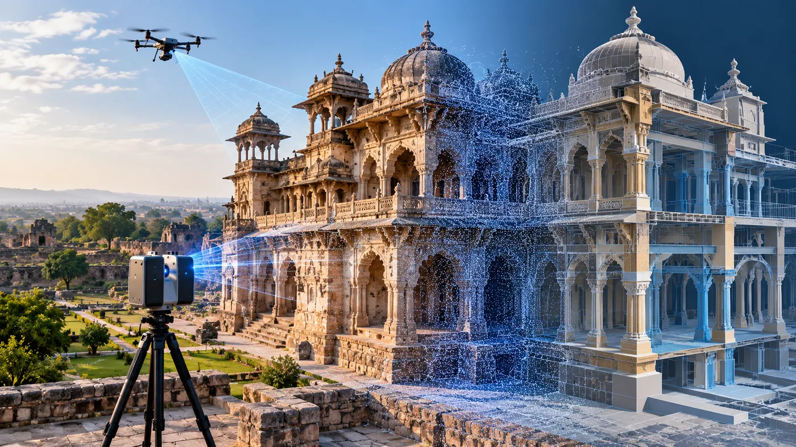

The Assignment
Historic monuments and heritage structures require detailed documentation to support conservation, restoration and long-term preservation. Their architectural complexity and cultural significance make accurate capture of existing conditions particularly important.
CS TECH Ai supported heritage initiatives through geospatial data acquisition and digital modelling, using terrestrial laser scanning and UAV-based aerial capture to document historic structures and their surroundings. The objective was to create detailed digital information that could support architectural and structural understanding, conservation planning and restoration activities.
Our Approach
CS TECH Ai combined ground-based and aerial data acquisition with BIM and 3D modelling workflows to digitally document heritage structures.
The engagement included:
- Terrestrial laser scanning of historic structures
- UAV-based aerial data acquisition
- Capture of detailed three-dimensional information
- Processing of acquired geospatial data
- Creation of digital representations of existing conditions
- Architectural modelling of heritage structures
- Structural modelling and documentation
- Documentation of the monument and surrounding site
- Development of digital information to support conservation and restoration planning
Using complementary ground and aerial capture methods enabled the structures to be documented from multiple perspectives, creating a more comprehensive digital record of the heritage environment.
From Reality Capture to Digital Documentation
The workflow brought together multiple geospatial and engineering disciplines:
Terrestrial Laser Scanning + UAV Capture → 3D Spatial Data → Digital Modelling → Architectural & Structural Documentation → Conservation & Restoration Support
The resulting digital information provides a structured representation of the existing heritage asset that can be referenced during subsequent conservation activities.
Supporting Heritage Conservation
Beyond the structure itself, geospatial documentation can also capture the relationship between a heritage site and surrounding land-based features.
This provides a broader information base for understanding factors such as:
- Site connectivity
- Surrounding habitation
- Hydrological features
- Important nearby landmarks
- Changes affecting the heritage environment
CS TECH Ai's heritage-mapping capability also supports documentation, risk analysis and change detection, creating a richer digital repository for conservation initiatives. All about Ceinsys from its webs…